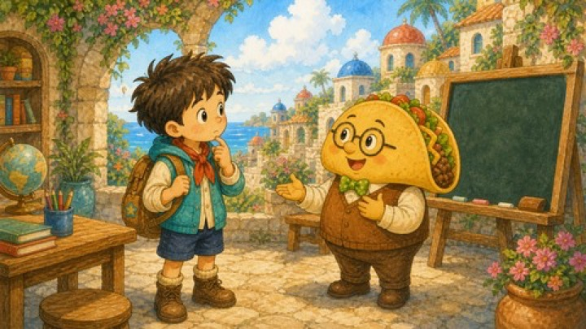
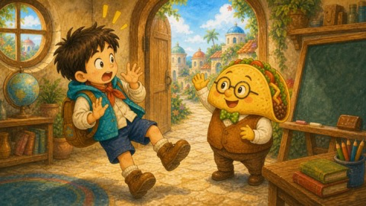
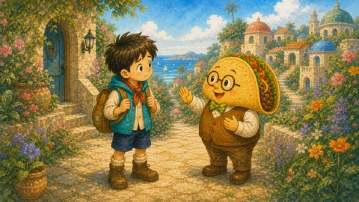
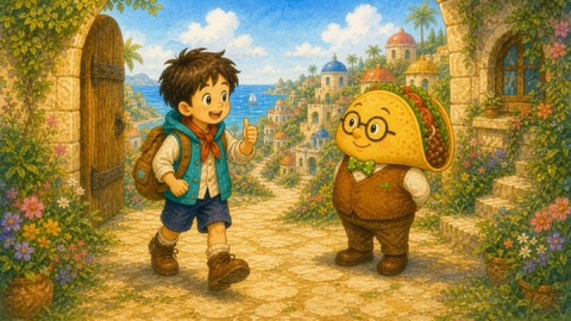
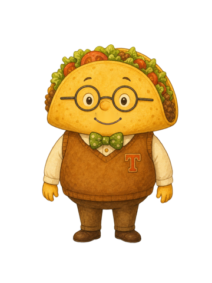
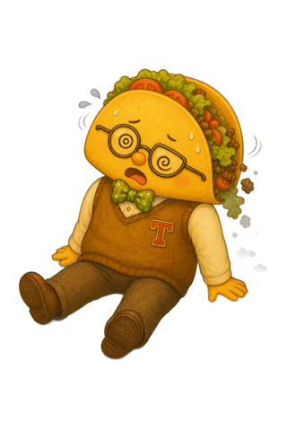

🫓
0000000❤️ 6🌮 TACO BEAT ♪ STAGE
モード
ノーツ速度 5 / 10・標準
タイミング微調整（−:早く／＋:遅く）
0ms
🌟 スペシャルタコス × 0続きから再開に1個
B1「Tom at the Gate」／wav2vec2 強制アライメント同期
⭕タップ判定サークルに重なった瞬間
✌️2枚同時光で結ばれたノーツは2本指
⟳ロング押しっぱなしで、端で離す
👉フリック末尾の矢印は払って離す
🍇スライドエキスパートは両手・片手中タップも
💗体力6操作途中の失敗は半ダメージ
⌨️PC操作D・F・SPACE・J・Kの5キー
⚡モードエキスパートは複合操作あり
🎉 STAGE CLEAR! 🎉
🌮 CANTINA PARTY RESULT 🌮
🌮🎉
いい味！
★ FULL COMBO ★
🌮 TACOS! × 0
いい味! × 0
こぼした! × 0
MAX COMBO0×
TOTAL0
ACCURACY0%
— 本日の一皿 —

体力がなくなった！
💔 ダメージ合計 6
通常の「こぼした」は1ダメージ。操作途中の失敗は半ダメージです。
もう一度は曲の最初から無料。続きからは失敗地点へ戻れます。
続きからはスペシャルタコスを1個使います
🌮⏸
一時停止中
今の位置とスコアはそのまま保存されています。